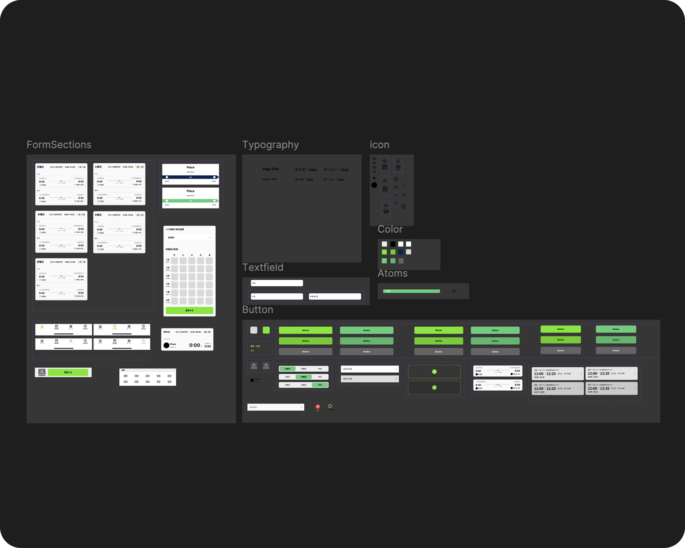
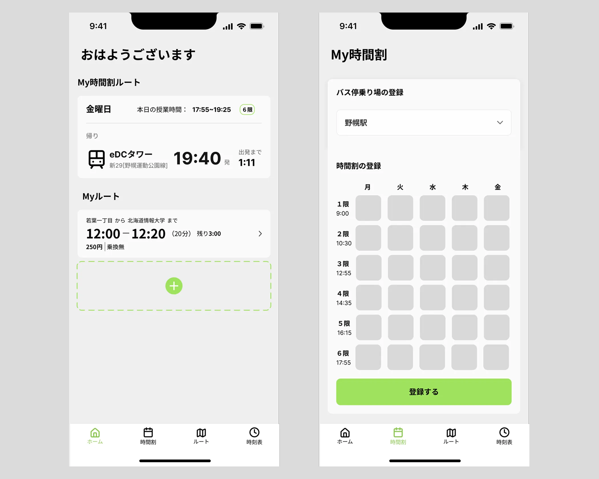

学生向け交通系アプリ
- #自主制作
- #アプリデザイン
学生向けに、交通系アプリを制作しました。
https://pattomi-tsugaku.vercel.app/
使っているソフト
Figma
Illustrator
制作期間
6週間
メンバー
デザイナー×2
プログラマー×2
担当した役割
デザイナー

Target
通学の際に交通機関を使う情報大学生
Purpose
急いでいる時に瞬時に交通情報が見えるアプリを作る。
既存の交通系アプリでは、一つの画面に複数の機能があり、多機能ゆえの習熟コストがかかってしまう課題点があると考えました。本アプリでは、必要最低限の情報で、瞬時に交通情報を見れるようにすることを目標にしました。
Information Architecture
交通系アプリを必要最低限の機能に限定し、さらに学生向けのため自分の時間割に合わせたMy時間割機能を入れました。また、プログラマーの効率化やコミュニーケーションを円滑に進めるためにも、重複しているボタンをコンポーネント化しました。

Design
アプリの性質上、画面を見た瞬間に情報が入ってくるようなシンプルなデザインを意識しました。そこで、コントラストがある配色にし、メインカラーでは、情報の信頼感を持たせるために、ライトグリーンを採用しました。また、北海道情報大学のアイデンティティである紺色と緑色の親和性を高めるためにアクセントカラーではネイビーを使いました。さらに、情報の誤読を避けるために、可読性に特化したInterを採用しました。
